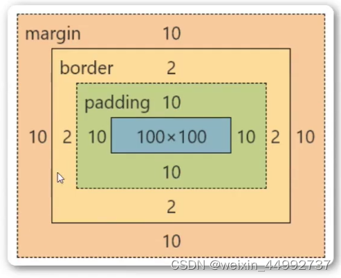

1. 盒子大小 = content + padding + border + margin

2. padding & margin
1. padding: 内边距，margin：外边距
2. padding作用于border内部
margin作用于border外部，不影响里面的内容。
3. box-sizing: content-box / border-box
默认值：box-sizing: content-box;
width=content
默认值：box-sizing: border-box;
width = content + padding + border
有个难听的昵称：怪异盒子模型 / IE模型
2. 行内元素&块元素
行内元素宽高由内容决定，不换行